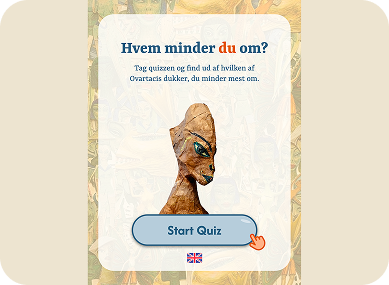
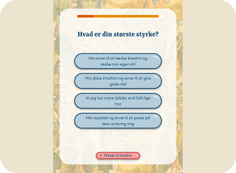
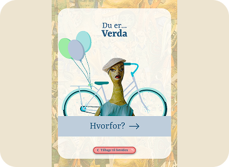
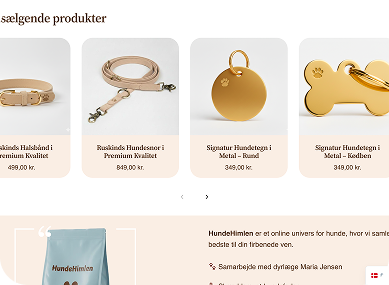
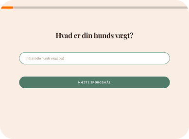
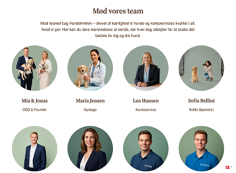
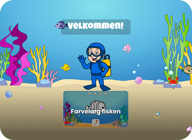
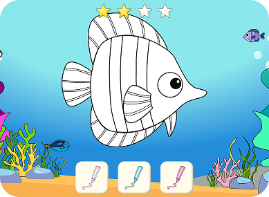
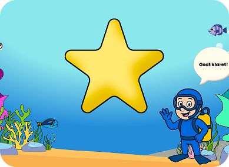

Mine
PROJEKTER

INTERAKTIV OPLEVELSE
OVARTACI
Opgaven var at udvikle en digital og interaktiv løsning til Museum Ovartaci med fokus på at engagere et yngre publikum og skabe en mere personlig relation til museets univers. Resultatet blev “Hvem minder du om?” – en interaktiv quiz, hvor besøgende matches med en af Ovartacis dukker.
PROCESSEN
Vi startede med research og besøg på Museum Ovartaci for at få en bedre forståelse for museets univers, udstillinger og målgruppe. Herefter arbejdede vi med idéudvikling, wireframes og prototyper. Løsningen blev løbende testet på brugere, og deres feedback blev brugt til at justere og forbedre designet og brugeroplevelsen.
LØSNINGEN
Den færdige løsning blev en personlig quiz, hvor brugeren gennem en række spørgsmål bliver matchet med en af Ovartacis dukker. Efter quizzen kan brugeren se, hvorfor de har fået netop dette match, og fortsætte til en kamerafunktion, hvor de kan tage et billede med deres match.




HJEMMESIDE
HUNDEHIMLEN
Vi udviklede en digital løsning for HundeHimlen med fokus på at skabe en brugervenlig og troværdig webshop. En central del af konceptet var et skræddersyet foderabonnement, hvor hundeejeren gennem en digital fodertest kan få foder tilpasset den enkelte hunds behov.
PROCESSEN
Vi startede med at undersøge målgruppen gennem sekundær research og interviews med hundeejere. Her fik vi blandt andet indsigt i målgruppens behov for kvalitet, tryghed, et simpelt design og tydelig information. På baggrund af vores research udviklede vi en persona og en Value Proposition Canvas, som dannede grundlag for vores videre designvalg.
Herefter arbejdede vi med den visuelle identitet og UX-design med fokus på at skabe et roligt, eksklusivt og troværdigt udtryk. Løsningen blev løbende testet og optimeret. Blandt andet brugte vi en 1-click test til at undersøge brugerens vej mod fodertesten.
LØSNINGEN
Resultatet blev en WordPress-baseret webshop med WooCommerce, hvor brugeren både kan købe hundeprodukter og gennemføre en interaktiv fodertest. Testen guider brugeren gennem spørgsmål om hunden og gør oplevelsen enkel og overskuelig.




INTERAKTIV TOUCHSKÆRM
AKVARIE BØRNESPIL
Opgaven var at udvikle en interaktiv touchoplevelse til Storcenter Nord med børn som målgruppe. Resultatet blev et kreativt farvelægningsspil, hvor børn bevæger sig gennem forskellige levels og farvelægger fisk, mens sværhedsgraden gradvist stiger.
PROCESSEN
Vi arbejdede med at skabe en løsning, der var enkel og intuitiv for børn at bruge, men samtidig havde et legende element, der kunne fastholde deres interesse. Gennem idéudvikling, design og prototyping udviklede vi spillets visuelle udtryk og opbygning med fokus på tydelig navigation og en brugeroplevelse tilpasset målgruppen.
Spillet blev udviklet med forskellige levels, så oplevelsen gradvist bliver mere udfordrende. På den måde kombinerede vi kreativ udfoldelse med gamification og progression.
LØSNINGEN
Den færdige løsning blev et interaktivt touchspil, hvor børn farvelægger fisk gennem forskellige levels med stigende sværhedsgrad. Kombinationen af farvelægning, progression og leg skaber en oplevelse, hvor børnene aktivt interagerer med skærmen.


